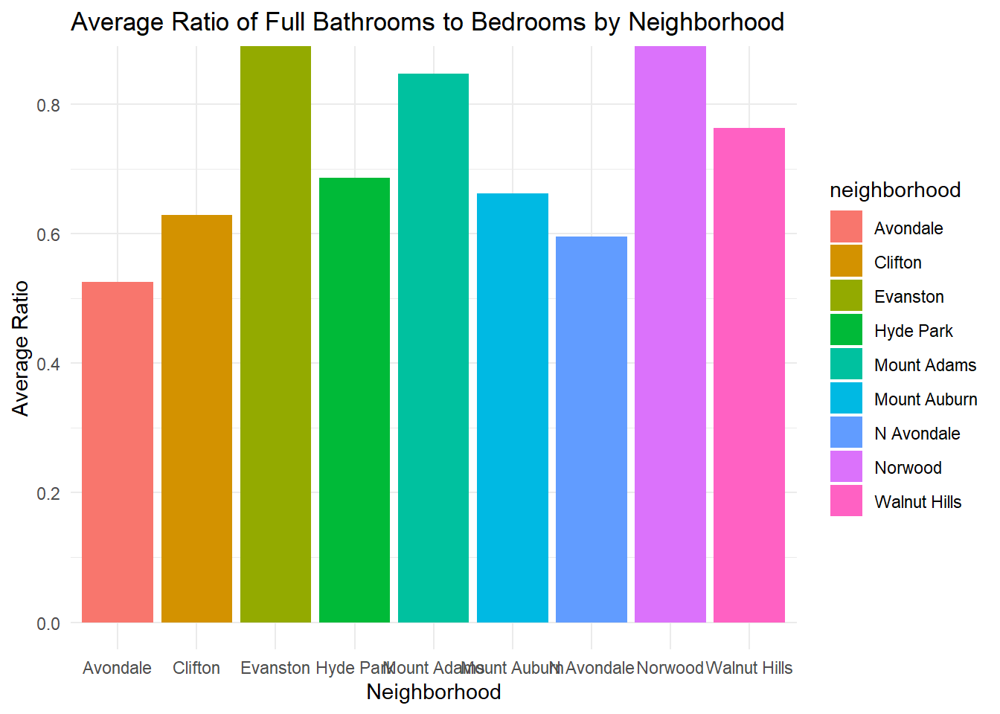

Assignment 4
Introduction
This document assesses data from the Hamilton County Auditor, which includes every residential property sale in the area from January 1, 2018 to December 31, 2021. Our hope is to find any trends of increased residential property prices due to anything pandemic related.
……
Load Packages
Load all package libraries:
Load the Data
Clean Data
Visualization
3.1 Distribution of Single Family Dwelling Home Sizes (SQFT)
The distribution seems skewed right. If the outliers were taken out however, I think SQFT would be more likely normally distributed.
3.2 Ratio of Full Bathrooms to Bedrooms for each Neighborhood

This result could be that some areas are wealthier so those homes contain more bathrooms. Also, some homes are older so they do not have as many bathrooms as modern built homes.
3.3 Total Value of Home Transactions Processed in Each Month For Each Neighborhood
There is not much of a trend… There are a lot more transactions in 2018, not much in the middle of 2020 due to the pandemic. The higher transactions seem to take place in the summer months, while other average transactions occur in the beginning of the year.
Directed Analysis
4.1 Gifted a Residential Property and intend to sell it for highest price
Location:
# A tibble: 9 × 2
neighborhood avg_value
<chr> <dbl>
1 Avondale 112260.
2 Clifton 340332.
3 Evanston 172675.
4 Hyde Park 470542.
5 Mount Adams 546450.
6 Mount Auburn 252503.
7 N Avondale 286139.
8 Norwood 186515.
9 Walnut Hills 201079.From this table, I would choose to sell this property in Mount Adams because this is the neighborhood with the highest average transaction value.
Features:
# A tibble: 9 × 5
neighborhood avg_value avg_bed avg_full_bath avg_size
<chr> <dbl> <dbl> <dbl> <dbl>
1 Avondale 112260. 3.88 1.96 2235.
2 Clifton 340332. 3.68 2.18 2610.
3 Evanston 172675. 3.44 1.71 1911.
4 Hyde Park 470542. 3.15 2.06 2162.
5 Mount Adams 546450. 2.63 2.15 2116.
6 Mount Auburn 252503. 3.11 1.91 1936.
7 N Avondale 286139. 3.95 2.20 2843.
8 Norwood 186515. 3.16 1.65 1727.
9 Walnut Hills 201079. 2.77 1.89 1733.I don’t think the numbers of bedrooms or full bathrooms have much of an effect on the value of a house, but from these visuals I would select 3 bedrooms, 2 full bathrooms, and around 2300 square feet.
Year:
The highest selling houses were built around the year 1925. There is an increasing trend so I would want my house built at least after 1900, preferably around 1925 or 2010s.
Time of year/Day:
I would sell my house during the summer. According to this visual, there are spikes in the transaction value during the summer months. This is when there is nice weather so people might look at houses more during this time and because of the increase in demand, the prices go higher.
Self-Directed Analysis

I would say this claim is incorrect, or at least the methods I used do not support the claim that residential properties are increasingly becoming owned by corporations rather than by individuals and that this phenomena is contributing to the increased price of housing in the area. There is an increase in properties being owned by corporations as seen in the fourth visual in this section, however, the amount of properties owned by people and families also increased. The values for both corporations and families do not seem to have a trend. I do not think they have increased over 2018 to 2022.
There is definitely a spike in 2021 for both corporations and those families/people buying homes. This follows the trend that was occurring before the pandemic occurred in 2020.